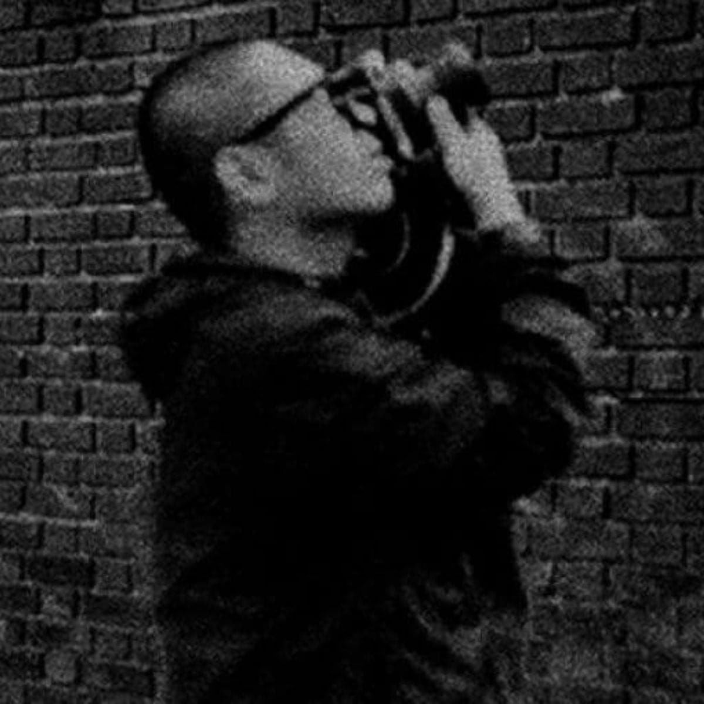
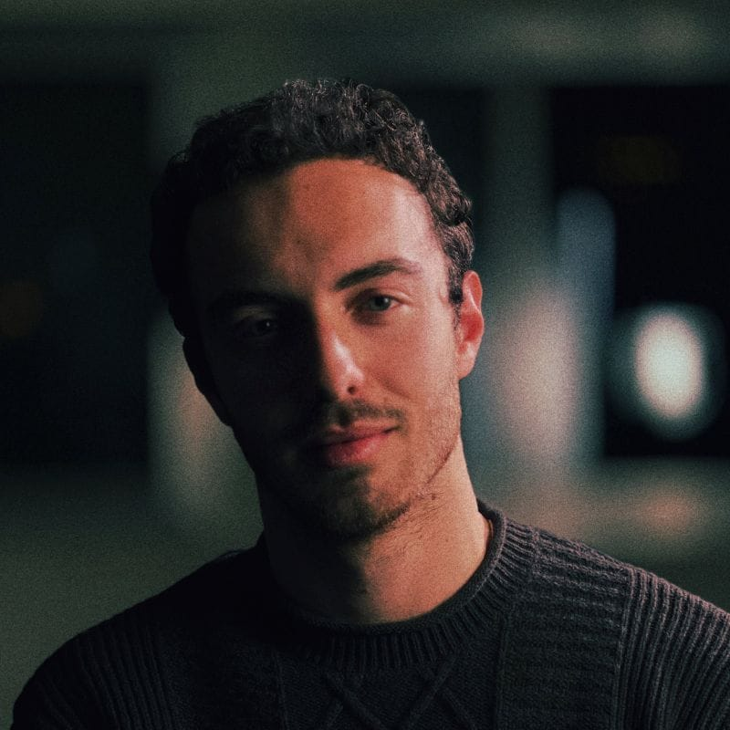
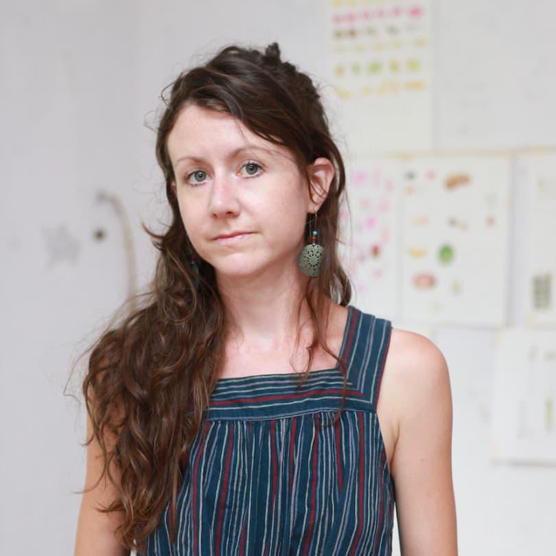

The peopleThe people.
Staff & visual artists

Tao Ho
Director of Photography

Guillermo Ordás
Cinematographer

Sarah K. Williams
Visual Art Supervisor
Mizuko Kaji
Costume & set designer
Join the team
We welcome speculative profiles from producers, educators, marketers, designers, and developers. Share your skills with us at info@creartbox.nyc.